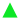
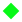

<!doctype html>
<html lang="en">
    <head>
        <meta charset="utf-8">
		<title>WebGIS Juragankost undip</title>
        <meta http-equiv="X-UA-Compatible" content="IE=edge">
        <meta name="viewport" content="initial-scale=1,user-scalable=no,maximum-scale=1,width=device-width">
        <meta name="mobile-web-app-capable" content="yes">
        <meta name="apple-mobile-web-app-capable" content="yes">
        <link rel="stylesheet" href="css/leaflet.css"><link rel="stylesheet" href="css/L.Control.Locate.min.css">
        <link rel="stylesheet" href="css/qgis2web.css"><link rel="stylesheet" href="css/fontawesome-all.min.css">
        <link rel="stylesheet" href="css/leaflet-search.css">
        <link rel="stylesheet" href="css/leaflet-control-geocoder.Geocoder.css">
        <link rel="stylesheet" href="css/leaflet-measure.css">
        <style>
        html, body, #map {
            width: 100%;
            height: 100%;
            padding: 0;
            margin: 0;
        }
        </style>
        <title></title>
    </head>
    <body>
        <div id="map">
        </div>
        <script src="js/qgis2web_expressions.js"></script>
        <script src="js/leaflet.js"></script><script src="js/L.Control.Locate.min.js"></script>
        <script src="js/leaflet-svg-shape-markers.min.js"></script>
        <script src="js/leaflet.rotatedMarker.js"></script>
        <script src="js/leaflet.pattern.js"></script>
        <script src="js/leaflet-hash.js"></script>
        <script src="js/Autolinker.min.js"></script>
        <script src="js/rbush.min.js"></script>
        <script src="js/labelgun.min.js"></script>
        <script src="js/labels.js"></script>
        <script src="js/leaflet-control-geocoder.Geocoder.js"></script>
        <script src="js/leaflet-measure.js"></script>
        <script src="js/leaflet-search.js"></script>
        <script src="data/Administrasi_3.js"></script>
        <script src="data/Kontrakan_4.js"></script>
        <script src="data/Kos_5.js"></script>
        <script>
        var map = L.map('map', {
            zoomControl:true, maxZoom:28, minZoom:1
        })
        var hash = new L.Hash(map);
        map.attributionControl.setPrefix('<a href="https://github.com/tomchadwin/qgis2web" target="_blank">qgis2web</a> &middot; <a href="https://leafletjs.com" title="A JS library for interactive maps">Leaflet</a> &middot; <a href="https://qgis.org">QGIS</a>');
        L.control.locate({locateOptions: {maxZoom: 19}}).addTo(map);
        var measureControl = new L.Control.Measure({
            position: 'topleft',
            primaryLengthUnit: 'meters',
            secondaryLengthUnit: 'kilometers',
            primaryAreaUnit: 'sqmeters',
            secondaryAreaUnit: 'hectares'
        });
        measureControl.addTo(map);
        document.getElementsByClassName('leaflet-control-measure-toggle')[0]
        .innerHTML = '';
        document.getElementsByClassName('leaflet-control-measure-toggle')[0]
        .className += ' fas fa-ruler';
        var bounds_group = new L.featureGroup([]);
        function setBounds() {
            if (bounds_group.getLayers().length) {
                map.fitBounds(bounds_group.getBounds());
            }
        }
        var layer_OpenStreetMap_0 = L.tileLayer('https://tile.openstreetmap.org/{z}/{x}/{y}.png', {
            opacity: 1.0,
            attribution: '',
            minZoom: 1,
            maxZoom: 28,
            minNativeZoom: 0,
            maxNativeZoom: 19
        });
        layer_OpenStreetMap_0;
        map.addLayer(layer_OpenStreetMap_0);
        var layer_GoogleSatellite_1 = L.tileLayer('https://mt1.google.com/vt/lyrs=s&x={x}&y={y}&z={z}', {
            opacity: 1.0,
            attribution: '',
            minZoom: 1,
            maxZoom: 28,
            minNativeZoom: 0,
            maxNativeZoom: 20
        });
        layer_GoogleSatellite_1;
        map.addLayer(layer_GoogleSatellite_1);
        var layer_GoogleHybrid_2 = L.tileLayer('https://mt1.google.com/vt/lyrs=y&x={x}&y={y}&z={z}', {
            opacity: 1.0,
            attribution: '',
            minZoom: 1,
            maxZoom: 28,
            minNativeZoom: 0,
            maxNativeZoom: 20
        });
        layer_GoogleHybrid_2;
        map.addLayer(layer_GoogleHybrid_2);
        function pop_Administrasi_3(feature, layer) {
            var popupContent = '<table>\
                    <tr>\
                        <th scope="row">Kecamatan</th>\
                        <td>' + (feature.properties['Kecamatan'] !== null ? Autolinker.link(feature.properties['Kecamatan'].toLocaleString(), {truncate: {length: 30, location: 'smart'}}) : '') + '</td>\
                    </tr>\
                    <tr>\
                        <th scope="row">Desa</th>\
                        <td>' + (feature.properties['Desa'] !== null ? Autolinker.link(feature.properties['Desa'].toLocaleString(), {truncate: {length: 30, location: 'smart'}}) : '') + '</td>\
                    </tr>\
                </table>';
            layer.bindPopup(popupContent, {maxHeight: 400});
        }

        function style_Administrasi_3_0() {
            return {
                pane: 'pane_Administrasi_3',
                opacity: 1,
                color: 'rgba(35,35,35,1.0)',
                dashArray: '10,5',
                lineCap: 'butt',
                lineJoin: 'miter',
                weight: 1.0, 
                fill: true,
                fillOpacity: 1,
                fillColor: 'rgba(164,113,88,0.0)',
                interactive: true,
            }
        }
        map.createPane('pane_Administrasi_3');
        map.getPane('pane_Administrasi_3').style.zIndex = 403;
        map.getPane('pane_Administrasi_3').style['mix-blend-mode'] = 'normal';
        var layer_Administrasi_3 = new L.geoJson(json_Administrasi_3, {
            attribution: '',
            interactive: true,
            dataVar: 'json_Administrasi_3',
            layerName: 'layer_Administrasi_3',
            pane: 'pane_Administrasi_3',
            onEachFeature: pop_Administrasi_3,
            style: style_Administrasi_3_0,
        });
        bounds_group.addLayer(layer_Administrasi_3);
        map.addLayer(layer_Administrasi_3);
        function pop_Kontrakan_4(feature, layer) {
            var popupContent = '<table>\
                    <tr>\
                        <th scope="row">Name</th>\
                        <td>' + (feature.properties['Name'] !== null ? Autolinker.link(feature.properties['Name'].toLocaleString(), {truncate: {length: 30, location: 'smart'}}) : '') + '</td>\
                    </tr>\
                    <tr>\
                        <th scope="row">Jenis</th>\
                        <td>' + (feature.properties['Jenis'] !== null ? Autolinker.link(feature.properties['Jenis'].toLocaleString(), {truncate: {length: 30, location: 'smart'}}) : '') + '</td>\
                    </tr>\
                    <tr>\
                        <th scope="row">Status</th>\
                        <td>' + (feature.properties['Status'] !== null ? Autolinker.link(feature.properties['Status'].toLocaleString(), {truncate: {length: 30, location: 'smart'}}) : '') + '</td>\
                    </tr>\
                    <tr>\
                        <th scope="row">Alamat</th>\
                        <td>' + (feature.properties['Alamat'] !== null ? Autolinker.link(feature.properties['Alamat'].toLocaleString(), {truncate: {length: 30, location: 'smart'}}) : '') + '</td>\
                    </tr>\
                    <tr>\
                        <th scope="row">Area</th>\
                        <td>' + (feature.properties['Area'] !== null ? Autolinker.link(feature.properties['Area'].toLocaleString(), {truncate: {length: 30, location: 'smart'}}) : '') + '</td>\
                    </tr>\
                    <tr>\
                        <th scope="row">Pemilik</th>\
                        <td>' + (feature.properties['Pemilik'] !== null ? Autolinker.link(feature.properties['Pemilik'].toLocaleString(), {truncate: {length: 30, location: 'smart'}}) : '') + '</td>\
                    </tr>\
                    <tr>\
                        <th scope="row">CP</th>\
                        <td>' + (feature.properties['CP'] !== null ? Autolinker.link(feature.properties['CP'].toLocaleString(), {truncate: {length: 30, location: 'smart'}}) : '') + '</td>\
                    </tr>\
                    <tr>\
                        <th scope="row">JmlKmr</th>\
                        <td>' + (feature.properties['JmlKmr'] !== null ? Autolinker.link(feature.properties['JmlKmr'].toLocaleString(), {truncate: {length: 30, location: 'smart'}}) : '') + '</td>\
                    </tr>\
                    <tr>\
                        <th scope="row">Kmr_Mandi</th>\
                        <td>' + (feature.properties['Kmr_Mandi'] !== null ? Autolinker.link(feature.properties['Kmr_Mandi'].toLocaleString(), {truncate: {length: 30, location: 'smart'}}) : '') + '</td>\
                    </tr>\
                    <tr>\
                        <th scope="row">Harga</th>\
                        <td>' + (feature.properties['Harga'] !== null ? Autolinker.link(feature.properties['Harga'].toLocaleString(), {truncate: {length: 30, location: 'smart'}}) : '') + '</td>\
                    </tr>\
                    <tr>\
                        <th scope="row">Kamar</th>\
                        <td>' + (feature.properties['Kamar'] !== null ? Autolinker.link(feature.properties['Kamar'].toLocaleString(), {truncate: {length: 30, location: 'smart'}}) : '') + '</td>\
                    </tr>\
                </table>';
            layer.bindPopup(popupContent, {maxHeight: 400});
        }

        function style_Kontrakan_4_0(feature) {
            switch(String(feature.properties['Status'])) {
                case 'Kosong':
                    return {
                pane: 'pane_Kontrakan_4',
                shape: 'diamond',
                radius: 8.8,
                stroke: false,
                fill: true,
                fillOpacity: 1,
                fillColor: 'rgba(6,249,23,1.0)',
                interactive: true,
            }
                    break;
                case 'Penuh':
                    return {
                pane: 'pane_Kontrakan_4',
                shape: 'diamond',
                radius: 8.8,
                stroke: false,
                fill: true,
                fillOpacity: 1,
                fillColor: 'rgba(239,3,27,1.0)',
                interactive: true,
            }
                    break;
            }
        }
        map.createPane('pane_Kontrakan_4');
        map.getPane('pane_Kontrakan_4').style.zIndex = 404;
        map.getPane('pane_Kontrakan_4').style['mix-blend-mode'] = 'normal';
        var layer_Kontrakan_4 = new L.geoJson(json_Kontrakan_4, {
            attribution: '',
            interactive: true,
            dataVar: 'json_Kontrakan_4',
            layerName: 'layer_Kontrakan_4',
            pane: 'pane_Kontrakan_4',
            onEachFeature: pop_Kontrakan_4,
            pointToLayer: function (feature, latlng) {
                var context = {
                    feature: feature,
                    variables: {}
                };
                return L.shapeMarker(latlng, style_Kontrakan_4_0(feature));
            },
        });
        bounds_group.addLayer(layer_Kontrakan_4);
        map.addLayer(layer_Kontrakan_4);
        function pop_Kos_5(feature, layer) {
            var popupContent = '<table>\
                    <tr>\
                        <th scope="row">Name</th>\
                        <td>' + (feature.properties['Name'] !== null ? Autolinker.link(feature.properties['Name'].toLocaleString(), {truncate: {length: 30, location: 'smart'}}) : '') + '</td>\
                    </tr>\
                    <tr>\
                        <th scope="row">Jenis</th>\
                        <td>' + (feature.properties['Jenis'] !== null ? Autolinker.link(feature.properties['Jenis'].toLocaleString(), {truncate: {length: 30, location: 'smart'}}) : '') + '</td>\
                    </tr>\
                    <tr>\
                        <th scope="row">Status</th>\
                        <td>' + (feature.properties['Status'] !== null ? Autolinker.link(feature.properties['Status'].toLocaleString(), {truncate: {length: 30, location: 'smart'}}) : '') + '</td>\
                    </tr>\
                    <tr>\
                        <th scope="row">Alamat</th>\
                        <td>' + (feature.properties['Alamat'] !== null ? Autolinker.link(feature.properties['Alamat'].toLocaleString(), {truncate: {length: 30, location: 'smart'}}) : '') + '</td>\
                    </tr>\
                    <tr>\
                        <th scope="row">Area</th>\
                        <td>' + (feature.properties['Area'] !== null ? Autolinker.link(feature.properties['Area'].toLocaleString(), {truncate: {length: 30, location: 'smart'}}) : '') + '</td>\
                    </tr>\
                    <tr>\
                        <th scope="row">Pemilik</th>\
                        <td>' + (feature.properties['Pemilik'] !== null ? Autolinker.link(feature.properties['Pemilik'].toLocaleString(), {truncate: {length: 30, location: 'smart'}}) : '') + '</td>\
                    </tr>\
                    <tr>\
                        <th scope="row">CP</th>\
                        <td>' + (feature.properties['CP'] !== null ? Autolinker.link(feature.properties['CP'].toLocaleString(), {truncate: {length: 30, location: 'smart'}}) : '') + '</td>\
                    </tr>\
                    <tr>\
                        <th scope="row">JmlKmr</th>\
                        <td>' + (feature.properties['JmlKmr'] !== null ? Autolinker.link(feature.properties['JmlKmr'].toLocaleString(), {truncate: {length: 30, location: 'smart'}}) : '') + '</td>\
                    </tr>\
                    <tr>\
                        <th scope="row">Kmr_Mandi</th>\
                        <td>' + (feature.properties['Kmr_Mandi'] !== null ? Autolinker.link(feature.properties['Kmr_Mandi'].toLocaleString(), {truncate: {length: 30, location: 'smart'}}) : '') + '</td>\
                    </tr>\
                    <tr>\
                        <th scope="row">Harga</th>\
                        <td>' + (feature.properties['Harga'] !== null ? Autolinker.link(feature.properties['Harga'].toLocaleString(), {truncate: {length: 30, location: 'smart'}}) : '') + '</td>\
                    </tr>\
                    <tr>\
                        <th scope="row">Kamar</th>\
                        <td>' + (feature.properties['Kamar'] !== null ? Autolinker.link(feature.properties['Kamar'].toLocaleString(), {truncate: {length: 30, location: 'smart'}}) : '') + '</td>\
                    </tr>\
                </table>';
            layer.bindPopup(popupContent, {maxHeight: 400});
        }

        function style_Kos_5_0(feature) {
            switch(String(feature.properties['Status'])) {
                case 'Kosong':
                    return {
                pane: 'pane_Kos_5',
                shape: 'triangle',
                radius: 8.0,
                stroke: false,
                fill: true,
                fillOpacity: 1,
                fillColor: 'rgba(12,231,38,1.0)',
                interactive: true,
            }
                    break;
                default:
                    return {
                pane: 'pane_Kos_5',
                shape: 'triangle',
                radius: 8.0,
                stroke: false,
                fill: true,
                fillOpacity: 1,
                fillColor: 'rgba(214,22,41,1.0)',
                interactive: true,
            }
                    break;
            }
        }
        map.createPane('pane_Kos_5');
        map.getPane('pane_Kos_5').style.zIndex = 405;
        map.getPane('pane_Kos_5').style['mix-blend-mode'] = 'normal';
        var layer_Kos_5 = new L.geoJson(json_Kos_5, {
            attribution: '',
            interactive: true,
            dataVar: 'json_Kos_5',
            layerName: 'layer_Kos_5',
            pane: 'pane_Kos_5',
            onEachFeature: pop_Kos_5,
            pointToLayer: function (feature, latlng) {
                var context = {
                    feature: feature,
                    variables: {}
                };
                return L.shapeMarker(latlng, style_Kos_5_0(feature));
            },
        });
        bounds_group.addLayer(layer_Kos_5);
        map.addLayer(layer_Kos_5);
        var osmGeocoder = new L.Control.Geocoder({
            collapsed: true,
            position: 'topleft',
            text: 'Search',
            title: 'Testing'
        }).addTo(map);
        document.getElementsByClassName('leaflet-control-geocoder-icon')[0]
        .className += ' fa fa-search';
        document.getElementsByClassName('leaflet-control-geocoder-icon')[0]
        .title += 'Search for a place';
        var baseMaps = {};
        L.control.layers(baseMaps,{'Kos<br /><table><tr><td style="text-align: center;"></td><td>Kosong</td></tr><tr><td style="text-align: center;"></td><td>Penuh</td></tr></table>': layer_Kos_5,'Kontrakan<br /><table><tr><td style="text-align: center;"></td><td>Kosong</td></tr><tr><td style="text-align: center;"></td><td>Penuh</td></tr></table>': layer_Kontrakan_4,' Administrasi': layer_Administrasi_3,"Google Hybrid": layer_GoogleHybrid_2,"Google Satellite": layer_GoogleSatellite_1,"OpenStreetMap": layer_OpenStreetMap_0,}).addTo(map);
        setBounds();
        map.addControl(new L.Control.Search({
            layer: layer_Administrasi_3,
            initial: false,
            hideMarkerOnCollapse: true,
            propertyName: 'Desa'}));
        document.getElementsByClassName('search-button')[0].className +=
         ' fa fa-binoculars';
        </script>
    </body>
</html>
